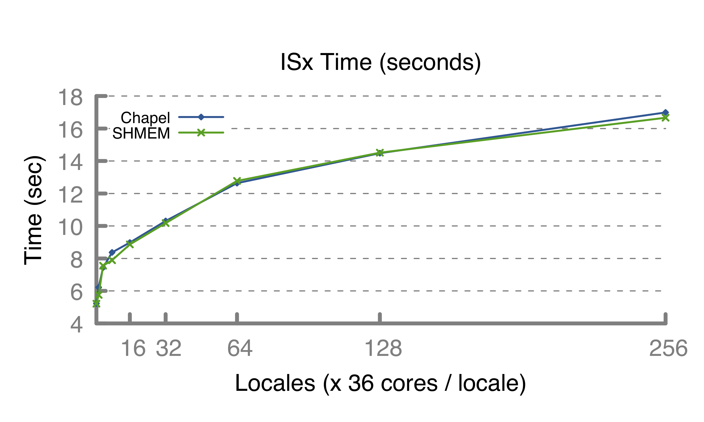

<?php
	$title="Performance Highlights: ISx";
?>
<?php include("stdheader.html");?>

<p>&nbsp;</p>

<h2>Chapel Performance Highlights: ISx</h2>
<div class="indent">

<a href = "https://github.com/ParRes/ISx">ISx</a> is a modern version
of the NAS IS benchmark that models integer sorting.  In it, each
compute node sorts its local values into buckets and then exchanges
buckets with other nodes.

<a href = "images/isx-time.png">
 
</a>

<?php include("xc-config.html");?>
<li> <b>C version:</b> gcc 8.3
<li> <b>SHMEM version:</b> cray-shmem 7.7.12
</ul>

</div>

<?php include("stdfooter.html");?>
